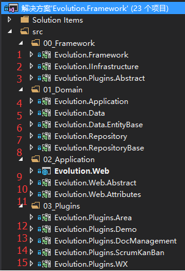

|  |
- 基础类库，提供基本的技术组件。包括：缓存，EF，加密，Excel处理，
Json处理，Security，序列化，Web函数，压缩处理，正则检查，验证码生成，
Http请求，邮件处理，日志处理等。
-
基础结构组件,一系列接口。此接口作用于Entity上。实现此接口则表示提供相关功能。
- ICreationAudited ：添加创建日志
- IDeleteAudited ：添加删除日志
- IModificationAudited ：添加修改日志
- 插件处理的抽象类。定义了基本的插件处理功能。
- 应用类。即Service层。
- 数据模型。其中包括系统的Entity，ViewModel及其相关配置。基础DBContext上下文。
- 数据模型基类。所有数据模型均继承自此类型。
- 仓储类。定义数据访问仓储。
- 仓储基类。所有仓储类继承此类型。
- 可以运行的网站
- 网站抽象类，定义ContollerBase处理基类。网站的Controller继承于此。
- 网站使用的Attribute均在此类当中定义
- 业务插件-区域插件
- 业务插件-Demo
- 业务插件-文档管理
- 业务插件-Scrum敏捷开发看板
- 业务插件-微信组件
|